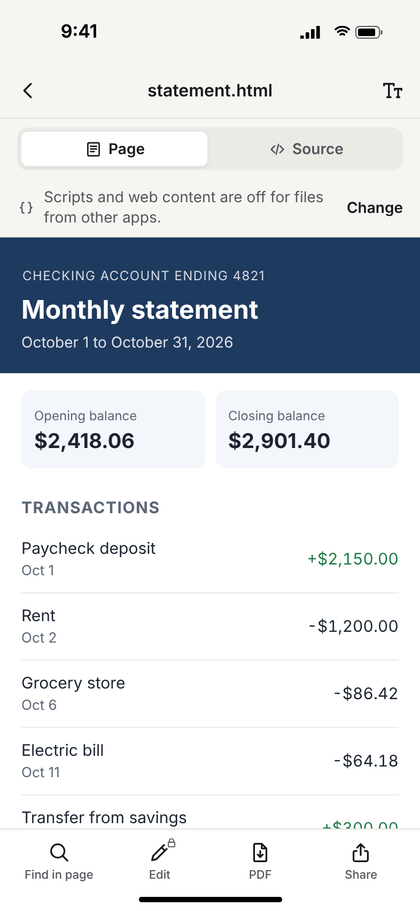
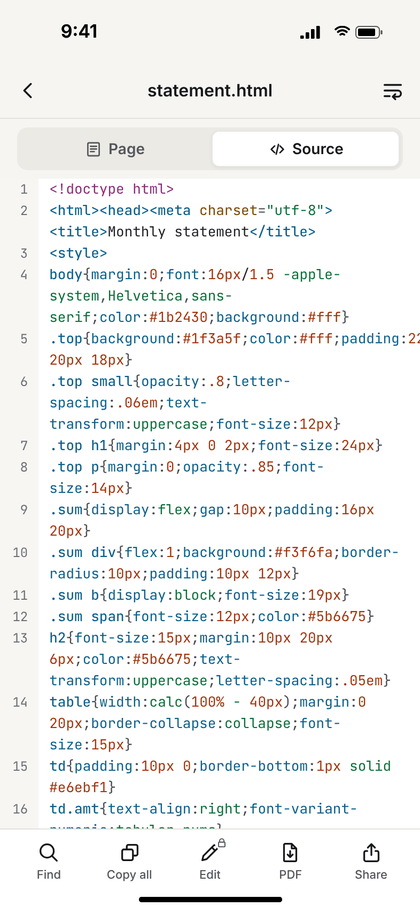
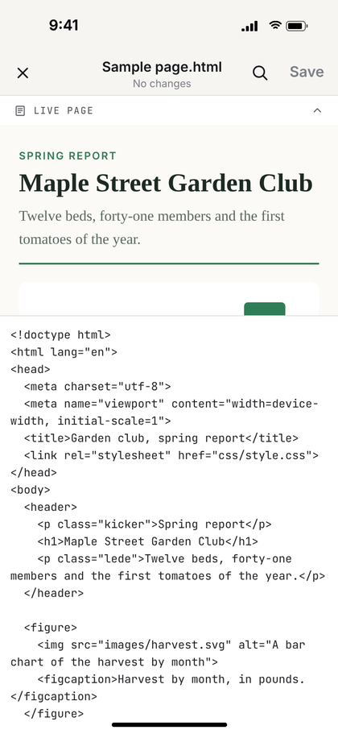
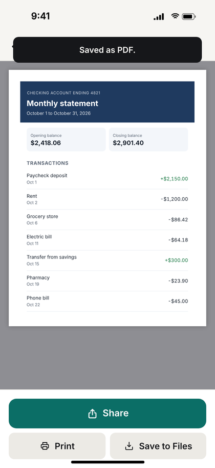

Open the .html file you were sent.
A bank statement, a report, an exported chat, a saved page, a school assignment. Read it like a page, see its code, and save it as a PDF, all on your iPhone.
Get it on the App StoreiPhone. Free to download; opening and reading files is free.




- In Mail, Files or Messages, tap the .html file, then tap Share.
- Pick HTML Viewer in the row of apps (tap More if you do not see it).
- The page opens. Tap Source to see the code.
Or open HTML Viewer and tap Open a file. To keep a page's pictures and styles with it, pick them together with the page.
Scripts are off for files from other apps, and so are pictures and styles from the web, so the sender cannot see you opened the file. Turn them on for one file when you trust it. A page can only read files in its own folder. Links to the web open in your browser; the app itself does not browse.
No account and no server. The app keeps its own copy of each file on your iPhone and never changes the original. Nothing leaves the phone unless you share it. See the privacy policy and questions and answers.